- Student Admissions
All student candidates have to graduate from high school and should pass the National Exam (UN). Process for accepting new students into the Civil Engineering Study Program (CESP) is conducted during academic year from May to June. Student admission is carried out by Hasanuddin University for the entire program. Prospective students are assessed for their academic performance in science, i.e. math and physics as basic capabilities for civil engineering student.
Admission is carried out in several schemes as described as follows:
- SNMPTN, a special invitation for high school potential graduates which has an excellent academic performance.
- SBMPTN, National Admission Selection for Public University which is managed by Ministry of Research and Higher Education.
- POSK, Local/Hasanuddin University entrance test for those having exceptional achievement in arts, sports and sciences
- Transfer Students and Transfer Courses
No transfer students and transfer courses.
- Advising and Career Guidance
Faculties are served as Academic Advisor (AA) who counsels the selection of courses prior to registering for the following semester. This counseling activity is in the form of recommendations for strategy to select courses in relation to prospective job after graduation.
EESP carry out academic dialogue regularly to obtain input and find solutions for student’s obstacles in the study process. Moreover, this academic dialogue discusses employment opportunities for graduated student. EESP also invites alumni association (IATEL) to provide job information.
At the college level (deputy dean for student and alumni affairs) and at the university level (Directorate of Alumni and Career Preparation) regularly conduct job affair for students and alumni.
- Work in Lieu of Courses
The EESP does not implement the requirements and process for awarding credit for work in lieu of courses.
- Graduation Requirements
An EESP graduate must complete at least 145 credit hours of courses, a total of 28 credits hours equivalent of those are non-lecture courses. In the final year, a student must present and defend his/her undergraduate Final Project Report, called “Skripsi”, having 4 credit hours. In the last semester, before the Final Project Report, a student must also present in a seminar his/her the Undergraduate Final Project Results, having 2 credit hours, undertake a Community Service, called “KuliahKerjaNyata” or KKN, one-month off-campus activity run by the university, usually in a remote area or a village, 4 credit hours, and undertake a Practical (Industrial or “On Job”) Training, one-/two-month off-campus activity, typically in an industrial site, having 2 credit hours.
In the last year, a student must also do a research activity termed as Laboratory Work 1 (for Semester 7) and Laboratory Work 2 (for Semester 8). The Laboratory Work 1 is an intra-laboratory or working-group R&D activity, having 8 credit hours, to develop an undergraduate final project proposal. The Laboratory Work 2 is an intra- laboratory or working-group R&D activity, having 8 credit hours, to produce a contribution from the undergraduate final project.
- The EESP graduates have a mastery in basic sciences and mathematics relevant to the basic competency in the field of electrical engineering (Basic Science Skills).
- The EESP graduates have an ability to anticipate, to formulate and to solve problems related to the field of electrical engineering (Professional Skills).
- The EESP graduates have the spirit of leadership and entrepreneurship, the academic attitude, and have an ability to compete to work in various sectors all over the world, especially in Indonesia and Asia-Pacific region (Entrepreneur Skills).
- The EESP graduates have capability to continue their study to higher degree of education all over the world (Research Skills).
By participating in various academic programs in EESP, the students will attain the basic competency in the field of electrical engineering, and at least one of the following options:
Option 1 : Electricity and Electrical Power Engineering
- an ability to design and to analyse electricity systems both tecnically and economically
- a mastery in power system generation, instalation, transmission and distribution, and power station operation
- a mastery in electric machines applications, maintenance, control and operation.
Option 2: Telecomunication and Information System
- a mastery in system management and control of network, hardware and multimedia software applications in telecommunication and information systems
- an ability to anticipate, to formulate and to solve problems related to the network, hardware and multimedia software applications in telecommunication and information systems
- an ability to participate in the science and technology development, especially in the area of telecommunication and information systems, and always being adaptive to the advancement of science and technology in this area
Option 3: Computer Engineering
- an ability to utilize the computer software packages for modeling and simulation of various electrical engineering problems, and general engineering problems
- a mastery in concepts, design and application of the digital computer hardware
Option 4: Control Engineering
- a mastery in the basic control theory, both classical and modern control theory, and its application in the control systems analysis and design
Option 5: Electronic Engineering
- a mastery on the knowhow of design, fabrication and application of electronic devices, circuits and systems, and microelectronics, including the utilization of software packages for integrated circuit layout design
In addition to the specific student outcomes above, the following ABET criteria are also made as references:
General Enginering Criteria (ABET)
- An ability to identify, formulate, and solve complex engineering problems by applying principles of engineering, science, and mathematics.
- An ability to apply engineering design to produce solutions that meet specified needs with consideration of public health, safety, and welfare, as well as global, cultural, social, environmental, and economic factors.
- An ability to communicate effectively with a range of audiences.
- An ability to recognize ethical and professional responsibilities in engineering situations and make informed judgments, which must consider the impact of engineering solutions in global, economic, environmental, and societal contexts.
- An ability to function effectively on a team whose members together provide leadership, create a collaborative and inclusive environment, establish goals, plan tasks, and meet objectives.
- An ability to develop and conduct appropriate experimentation, analyze and interpret data, and use engineering judgment to draw conclusions.
- An ability to acquire and apply new knowledge as needed, using appropriate learning strategies.
Electrical Engineering Criteria (ABET)
- Broad knowledge over all areas within electrical engineering (power engineering, telecommunication, control engineering, electronics and computer enginering)
- Depth of knowledge in at least one area.
- Knowledge of probability and statistics, including applications to electrical and computer systems
- Knowledge of mathematics through differential and integral calculus
- Knowledge of basic sciences, computer science, and engineering sciences necessary to analyze and design complex electrical and electronic devices, software, and systems containing hardware and software components
- Knowledge of advanced mathematics, linear algebra, complex variables
- Sufficient background for graduate study
- Program Curriculum
- 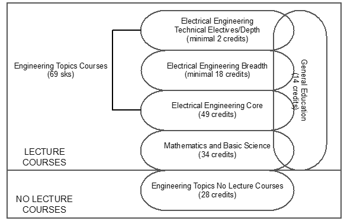
- 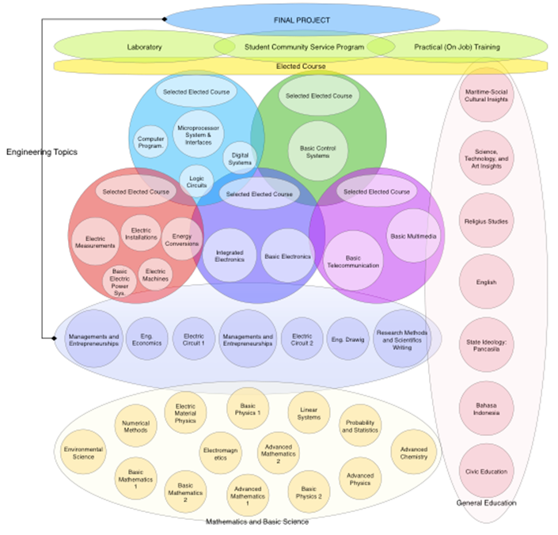
- Course Syllabi
- 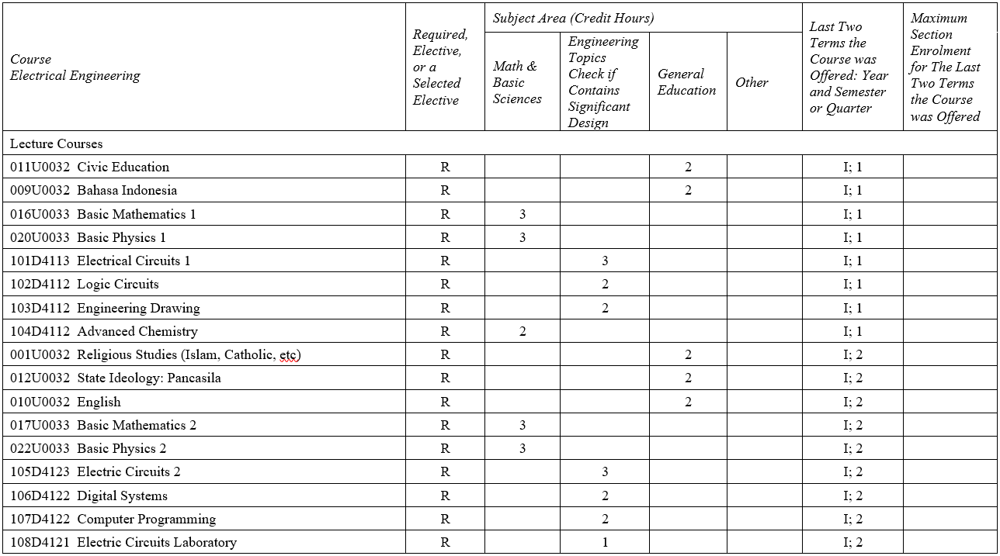
- 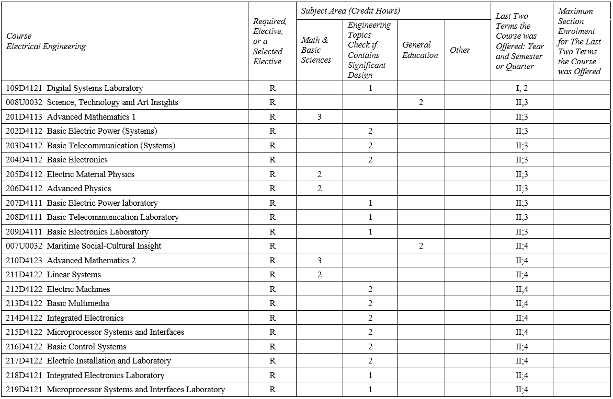
- 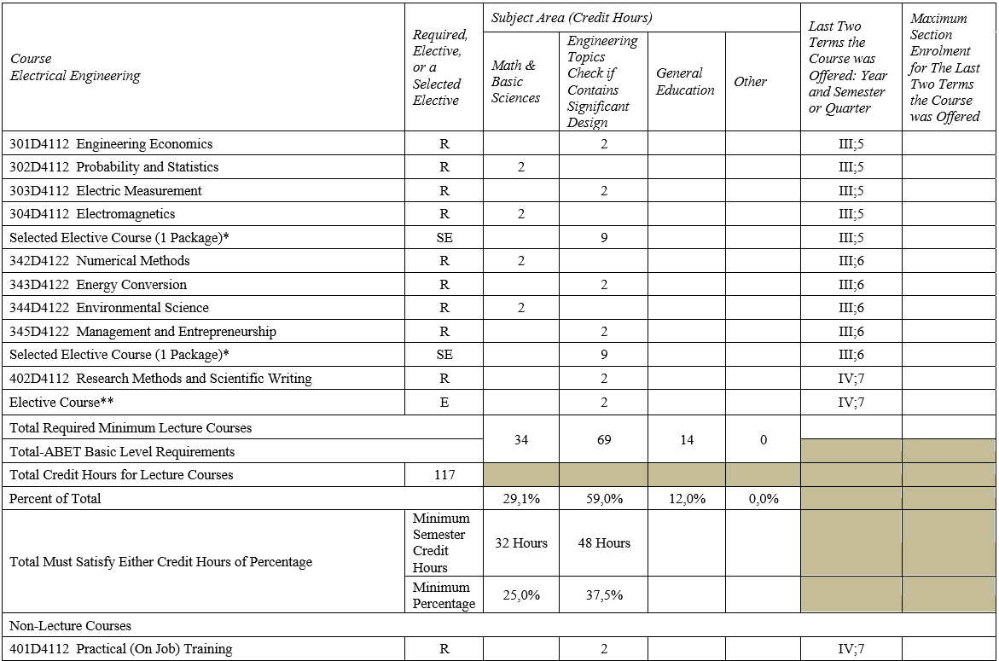
- 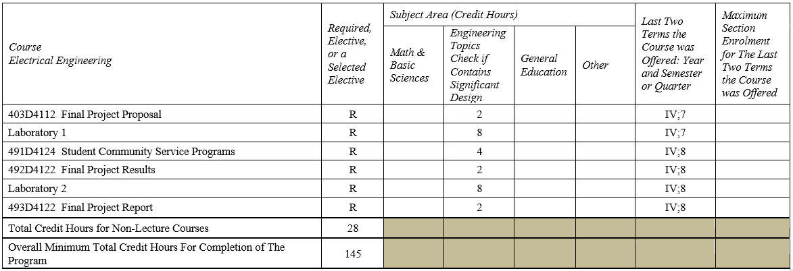
- 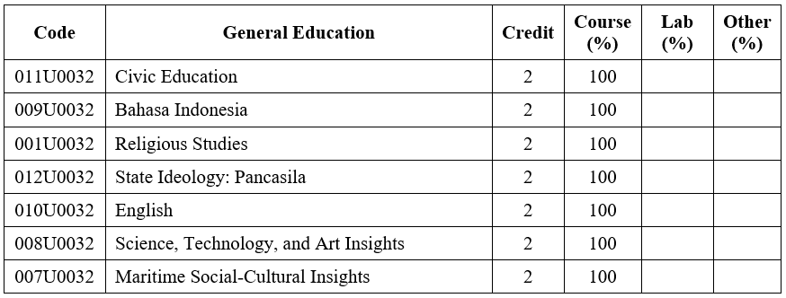
- 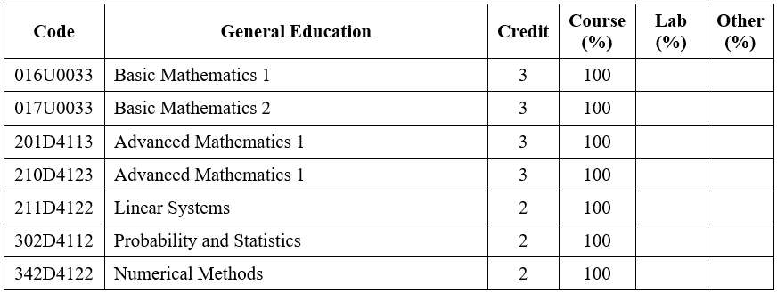
- 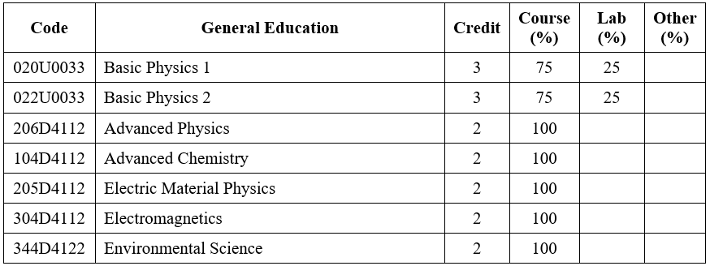
- 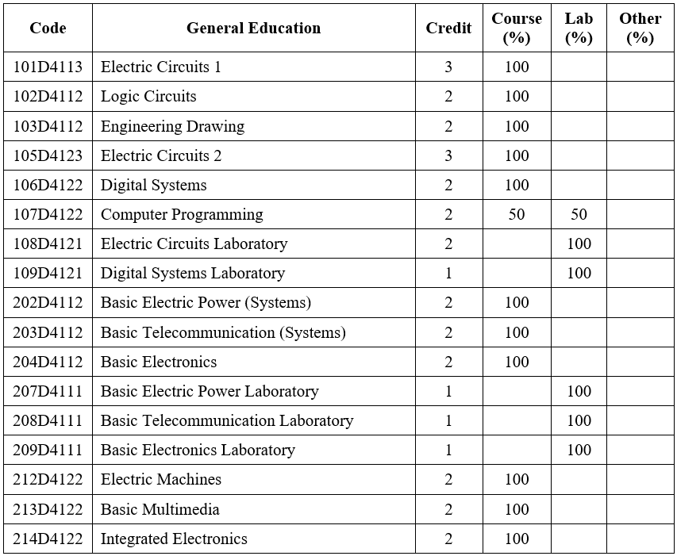
- 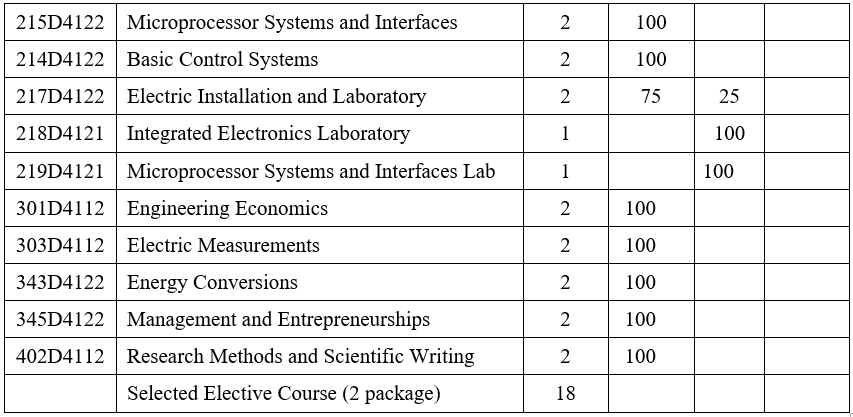
- 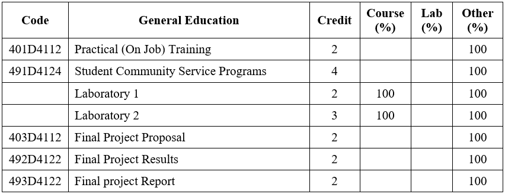
The Program Curriculum of the EESP is designed to meet the program educational objectives.The EESP requires that all educational programs must have a freshman year that consists of mathematics and basic science, a set of general education, and engineering topics. With these constraints, the implementation of the EESP curriculum consists of three elements and with a total minimum of 145 credits hours as shown in the Figure 5-1.
Overview of EESP curriculum.
Table 5-1 describes the plan of study for students in this program including information on course offerings in the form of a recommended schedule by year and term along with maximum section enrollments for all courses in the program.
The flowchart or worksheet that illustrates the prerequisite structure of the program’s required courses is shown in Figure 5-2.
Flowchart or worksheet that illustrates the prerequisite structure of the program.
The Course Syllabi can be found in Appendix A of this Readiness Review Report.
Electrical Engineering Study Program
The following information provides the components of the EESP curriculum.
General Education
The general education consists of 7 courses (total 14 credit hours). The general educations are listed in Table 5.2 General Education Component below. These fourteen credit hours satisfy all the requirements of the Hasanuddin University general education curriculum, which is design to accomplish the goals of Hasanuddin University as defined by its mission statements.
General Education Component
Mathematics and Basic Science
The mathematics and basic science consist of 34 (thirty-four) credit hours. It divides to 18 (eighteen) credit hours of mathematics as shown in the Table 5.3 and 16 (sixteen) credit hours of basic science as shown in The Table 5-4.
Mathematics Component
Basic Science Component
Engineering Topics
The engineering topics component divides to 69 (minimum) credit hours of lecture course as shown in the Table 5-5 and 28 credit hours of no lecture course as shown in the Table 5-6
Lecture Courses
Non-Lecture Courses
- Faculty Qualifications
The faculty members of EESP consist of 33 faculty members, 5 of them are professors and one visiting lecturer. The faculties come from a wide variety of graduated domestic and overseas institutions. They are dedicated persons who have competence and expertise that support the achievement of learning in EESP. Their expertise includes Telecommunications and Information Engineering, Electric Power Engineering, and Computer, Control and Electronic Engineering.
In Telecommunication and Information Engineering, the EESP has 9 faculties. They have many years of experience in design and planning of telecommunication system related to wireless, satellite, fiber optic, antenna, traffic engineering, and switching. In Electric Power Engineering, the EESP has 12 faculty members. They have expertise in Stability, Control and Power System Protection, Power Electronics, High Voltage and Isolation, Distribution of Power Systems and Electrical Installations, Power Systems and Electricity, Electricity Infrastructure. In Computer, Control and Electronic Engineering, the EESP has 12 faculty. And a visiting lecture.
Most of the faculty conduct highly research activities and manage the research groups in their each field of expertise. They are also very active in writing some articles for some conferences and reputable international journals.
Electrical Engineering Study Program (EESP)
- 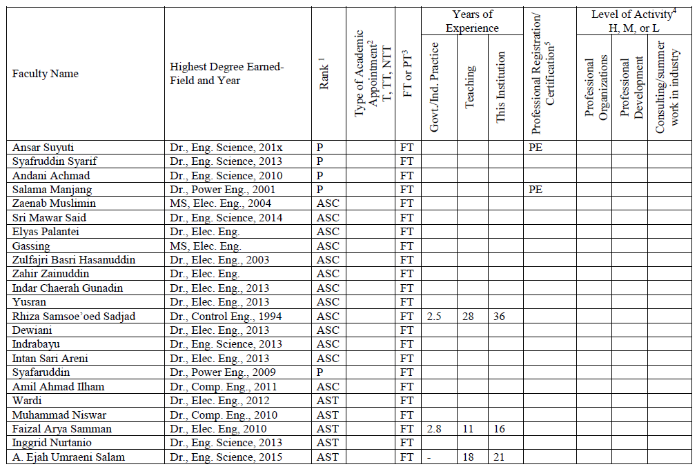
- 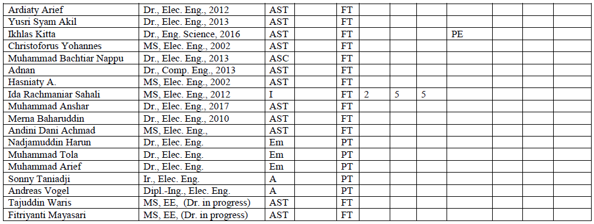
- Faculty Workload
The EESP full-time faculty members requires to fulfill 12-16 credits hours in each semester which covering the area of teaching, research, community service, and others. Teaching and research typically accounts for minimum 9 credits hours of workload, where teaching for minimum 6 credit hours. The teaching activities include thesis supervisor, examiner for proposal seminar and final year report, and academic advisor. The faculty members engage in minimum 3 hours of community service and other acrivities.
Table 6-2 presents the Faculty Workload Summary and describes this information in terms of workload expectations or requirements.
- 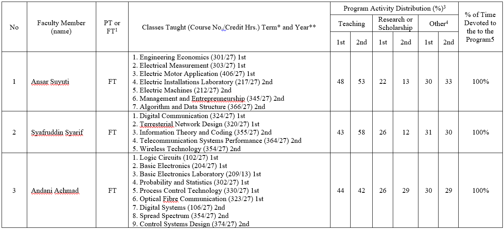
- 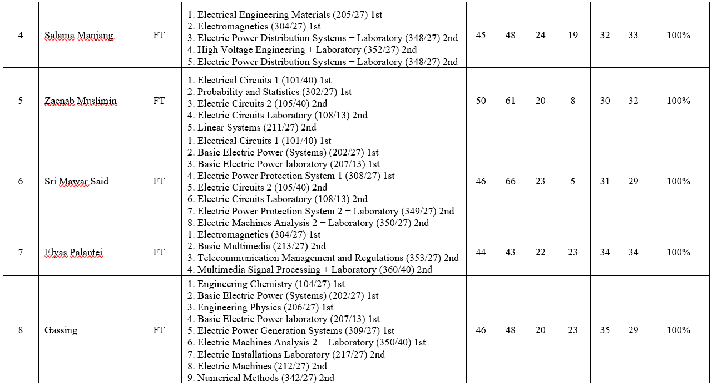
- 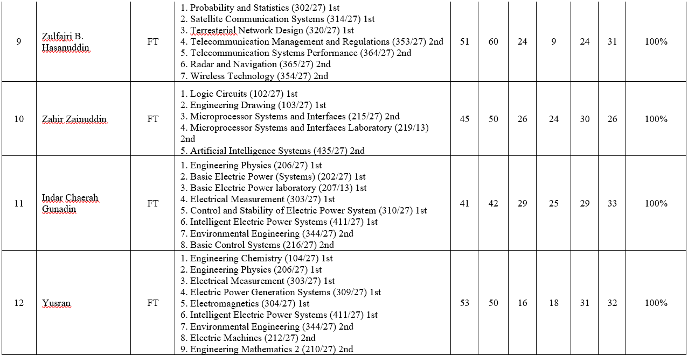
- 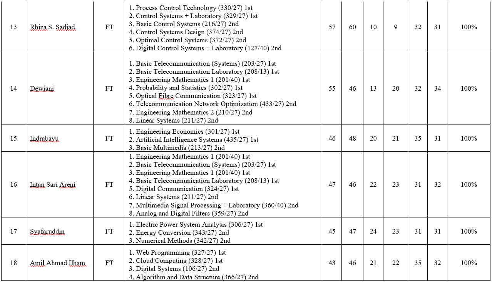


- 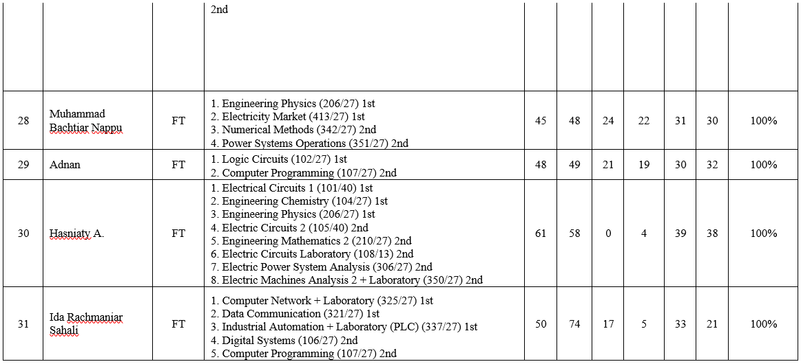
- 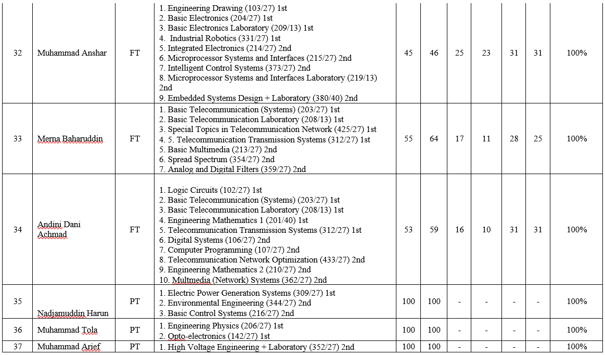
- 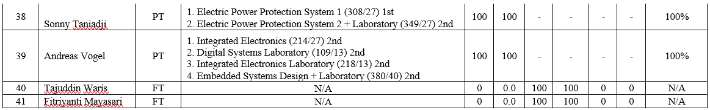
- Faculty Size
The faculty members are sufficient to cover all of the courses both required engineering courses and elective courses, with at least two faculty members competent of teaching the courses. All of the courses are presented at once a year, and some of the elective courses are offered for every semester.
Interactions with students: Several ways are conducted to interact between faculty and students. The faculty interacts closely with the students by face-to-face meeting in classroom or meeting in the faculty room. Interaction can also be done through online media such as e-mail, Learning Management System (LMS), social media, and special social media application groups. The interactions are usually done in relation to the assignment of the course, faculty as academic advisor, as a supervisor: undergraduate research and field study, student activities i.e robotic contest.
University service activities: The service activities carried out by the faculty are extensive, both on campus and off campus. Some faculty members become members of the university division. Also some faculty members participate in various committees for university or faculty activities, participate in coaching student activities such as robot contests, student creativity programs, and others. In addition, participation is also conducted outside the campus to serve the community. Community service in the form of: Procurement and counseling on how to obtain clean water for people in areas that are difficult to get clean water. Engaged in electricity-saving education programs and the use of solar panels for locations that have not installed electricity services by the government.
Professional development: Professional development for faculty members is regularly carried out. A faculty is required to take apart in the course design and pedagogical techniques training such as Instructional Technique for Basic Skills Improvement Training and Applied Approach Training. Some of the trainings are also attended by faculty members such as training on: the research proposal preparation, the strategy to penetrate international scientific journal publications, and the research output utilization with potential for patents. In addition to professional developments, the faculty members also build effective network with others lecturer in both domestic and abroad through post graduated program in foreign universities, national and international conferences, the program of scheme for academic mobility and exchange (SAME) in foreign universities.
Interactions with industrial and professional practitioners including employers of students: Some of the faculty members are actively involved in solving industrial problems, and conducting collaborative research such as with electric utility and cement companies. The EESP is regularly invited representatives from industry as guest lecturers in undergraduate classes to give public lectures to broaden the students understanding of current industrial context.
- Professional Development
The summary of professional development activities for each faculty member is presented
Table 6.3 Summary of Professional Development Activities for Faculty Members.
- 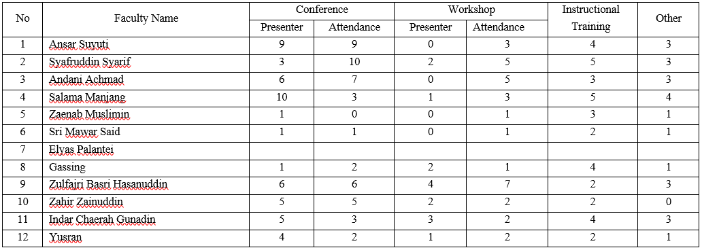
- 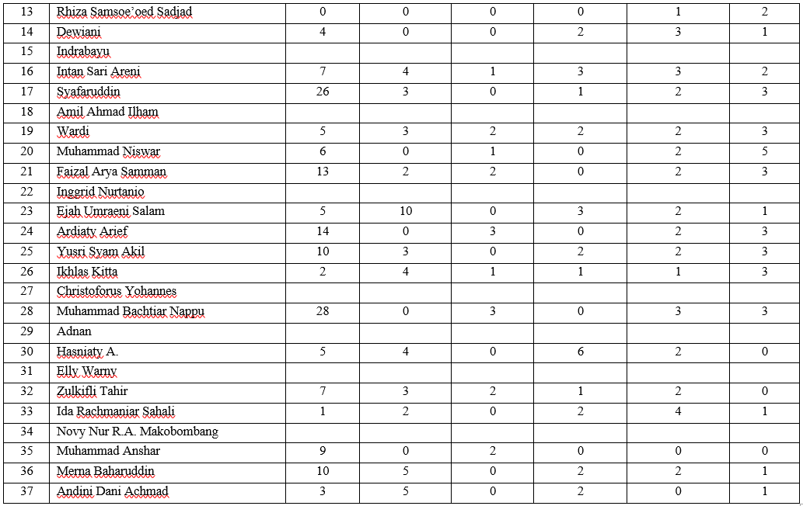
- Authority and Responsibility of Faculty
Faculty members at the EESP have responsibility related to academic program in electrical engineering which is approved by faculty. Besides semester evaluation, every five years, faculty members evaluate / review the implementation of academic program as a whole including such us program goals, curriculum, student ratings, and equipment resources. The review is intended to know the implementation level of the academic program so it can be used as a reference in designing the next academic program. If there are big changes such as deleting or adding new course, then it is proposed to department and forwarded to faculty for final approval. Faculty members have authority for course modifications.
The main structure of the curriculum is shown by Figure 1-1. In the first 4 (four) semesters, freshmen and sophomores spend most of their time in classrooms and supporting teaching laboratories to develop their knowledge on required mathematics and basic sciences (physics and chemistry), and the Electrical Engineering fundamentals, especially the 4 (four) basics namely1: (1) Electric Circuits, (2) Electro-magnetics, (3) Solid-state Electronics and (4) Digital Logic Circuits. They also begin to develop their skills to conduct simple experiments, to analyze, interpret and present data, to enhance their knowledge on the required subjects.
After completing all basic and fundamental courses, in the third year the students are supposed to take at least one elective-course package per semester consisting of 3 to 4 courses in a specific area of electrical engineering that will - but not necessarily - lead to one of the research laboratories or working groups in the fourth year that they are interested to apply. Roughly 6 to 8 elective-course packages are offered each semester to juniors, covering the total of more than 50 elective-courses.
Beginning in the fifth semester, a junior should make a decision to choose at least one of the following 5 (five) options by solicitedly selecting the related package of elective courses:
- Option 1: Electrical Power Engineering and Electricity
- Option 2: Telecommunication Engineering and Information Systems
- Option 3: Computer Engineering and Robotics
- Option 4: Control Systems and Instrumentation
- Option 5: Electronic Engineering
The ultimate learning process is at the final fourth year. Seniors are required to apply to one of the research laboratories or working groups. When a senior is admitted to a research laboratory or working group then he or she becomes a member of the laboratory or group by signing an annual contract with the head of the laboratory or the chairman of the group. The seniors will work together with professors and their associates and assistants, their fellows graduate and undergraduate students, to develop their ability to apply their knowledge and to design experiments, systems, processes and/or components to meet desired needs. They also learn how to work effectively not only as individuals but also in teams, either as leaders or members.
After completing all basic and fundamental courses, in the third year the students are supposed to take at least one elective-course package per semester consisting of 3 to 4 courses in a specific area of electrical engineering that will - but not necessarily – lead to one of the research laboratories or working groups in the fourth year that they are interested to apply. Roughly 6 to 8 elective-course packages are offered each semester to juniors, covering the total of more than 50 elective-courses.
List of Available Research Laboratories and Working Groups in the Academic Year of 2018-201
- 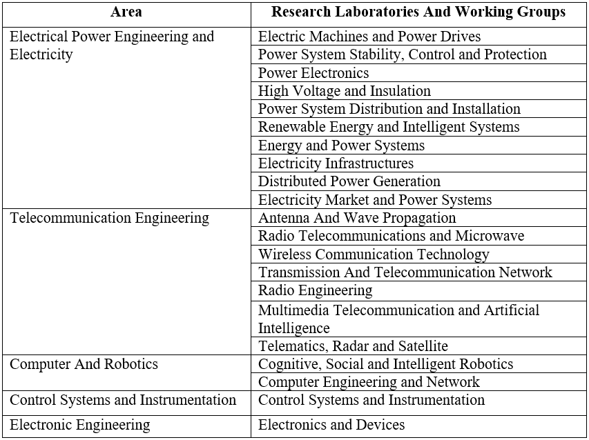
All academic teaching and learning processes are located in the new Faculty of Engineering campus at Gowa, about 20 km to the south from the old campus at Tamalanrea, Makassar. The new campus is designed to accommodate the concept of Laboratory-based Education (LBE) adopted by the Faculty of Engineering. Common facilities such as classrooms, the central library and the Faculty of Engineering administrative offices, are located in the main area of campus. A three-story building as seen in Fig. 1-2 is functioned as the Classroom Building to house classrooms with the capacity of 20 to 100 students. Lecture theaters for an audience of hundreds of students are also available for general lectures. For smaller classes, less than 20 students, the seminar and meeting rooms in laboratories at the Electrical Engineering Building can be used, as shown in Fig. 1-3
- 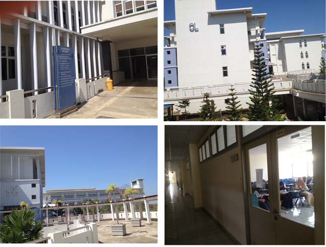
The Faculty Engineering's Common Classroom Building
- 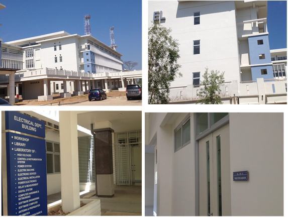
The Electrical Engineering Building
- 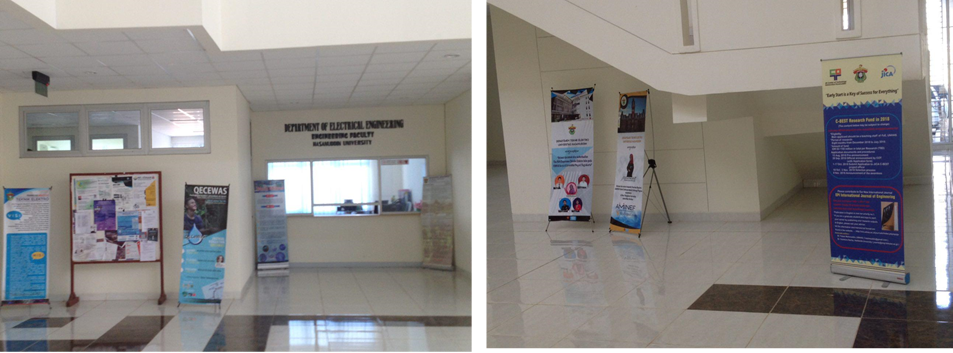
The Standing Banners in Front of the Depatment's Administrative Office